Principales editoriales que publican Manga en español
Estas son las editoriales que actualmente publican mangas en español de forma oficial mediante la adquisicion
de
licencias directamente en Japon, hay mas editoriales, pero estas 5 son
las mas importantes para el mecado argentino y español (existen otras editoriales que editan manga para el
mercado
mexicano
pero
por ahora la lista se va a limitar a editoriales de esos 2 paises).
Ivrea (Argentina)Panini Manga (Argentina) Ovni Manga (Argentina)Planeta Comic (España)Norma Editorial (España)
Propósito de la creación de esta página
El propósito de la creación de esta página Web es para poder agrupar en una sola página las editoriales que
publican manga en español,tanto para Argentina como para España,para así se pueda acceder de una manera más
fácil
y directa a la búsqueda de los títulos que edita cada editorial.
Las personas que accedan a esta pagina podran ver en un solo lugar el catalogo completo de mangas publicados por
las correspondientes
editoriales junto a sus
ultimos tomos y series sacadas a la venta.
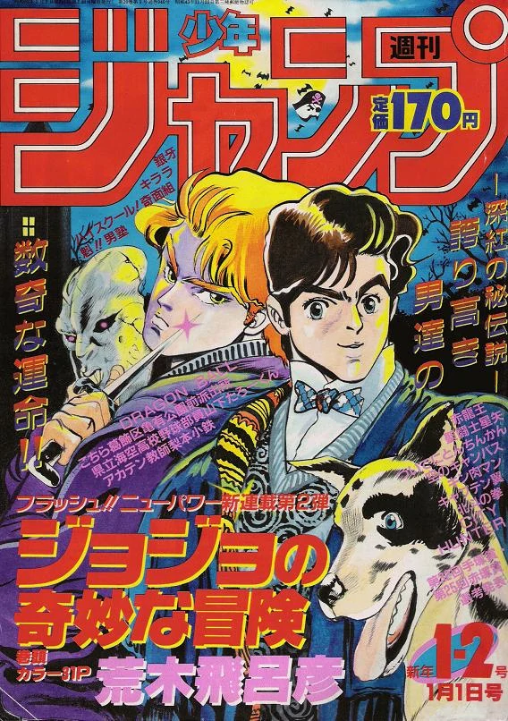
Todas las editoriales que publican mangas en español
Estas son las principales editoriales que
publican mangas en español,muchas editoriales
trabajan tambien para
Mexico y otros paises de habla hispana pero el mercado se centraliza mas que nada en España y Argentina, estos
dos paises tienen las editoriales mas antiguas en cuanto a publicacion de mangas e comics europeos y
norteamercanos, siendo Ivrea y editorial Planeta las mas antiguas.
¿En que consiste el Manga?
El Manga (漫画) es un tipo de Historieta la cual procede de Japón y entre sus principales
diferencias con el cómic
americano es que abarca muchos mas generos demograficos que el de los superhéroes, El manga se clasifica en
función del segmento de población al que se dirigen. Para ello usan términos japonés como los siguientes:
(Kodomo
manga 子供漫画), dirigido a niños pequeños (Shōnen manga 少年漫画) , dirigido a chicos
adolescentes, (Shōjo manga 少女漫画),
dirigido a chicas
adolescentes,(Seinen manga 青年漫画), dirigido a hombres jóvenes y adultos,(Josei manga
女性漫画), dirigido a mujeres
jóvenes y
adultas, ademas de eso existen otros generos de manga como BL(Boys Lover) o Yaoi con historias de romances entre
chicos o Yuri, historias de romances entre chicas.
Manga es la palabra japonesa para designar las historietas en general. Fuera de Japón, se utiliza para referirse
a
las historietas de origen japonés.
El manga japonés constituye una de las tres grandes tradiciones historietísticas a nivel mundial, junto con la
estadounidense y la franco-belga. Abarca una extensa variedad de géneros y llega a públicos diversos. Es una
parte
muy importante del mercado editorial de Japón y motiva múltiples adaptaciones a distintos formatos: series de
animación, conocidas como anime, o de imagen real, películas, videojuegos y novelas. Cada semana o mes se editan
nuevas revistas con entregas de cada serie, al más puro estilo del folletín, protagonizadas por héroes cuyas
aventuras en algunos casos seducen a los lectores durante años.1 Desde los años ochenta han ido conquistando
también los mercados occidentales.
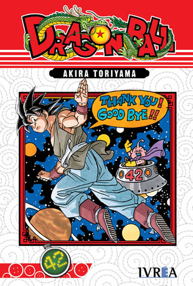
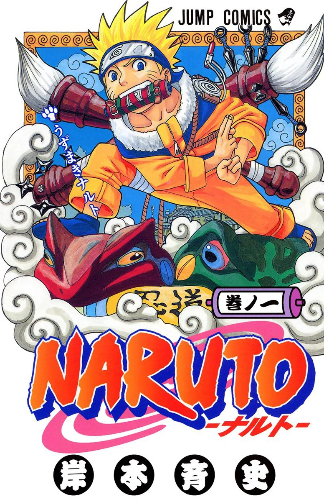
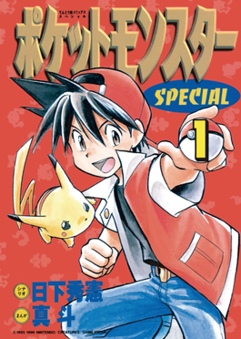
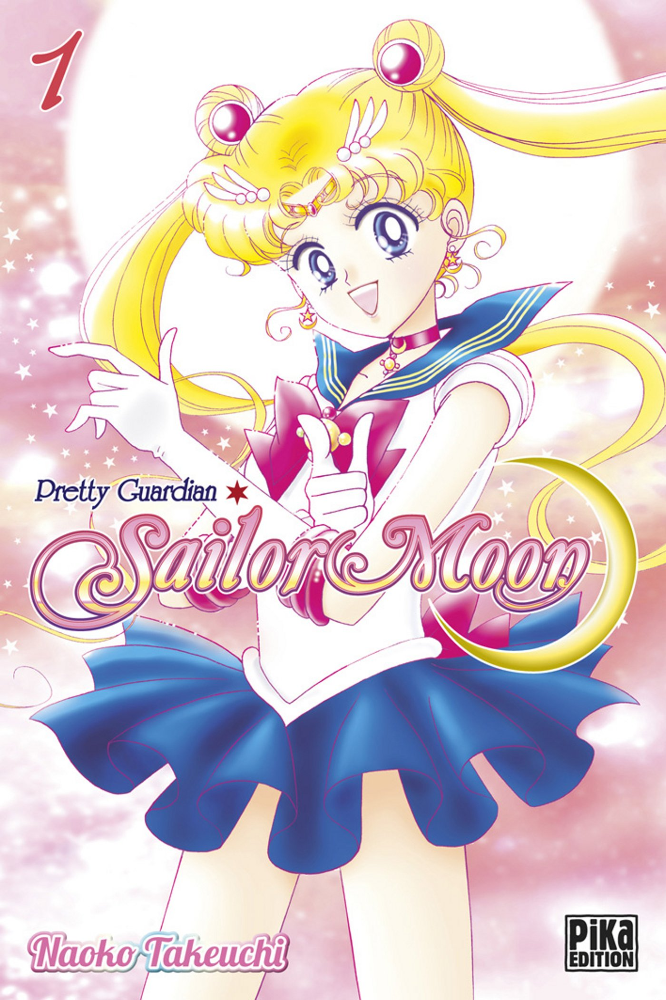
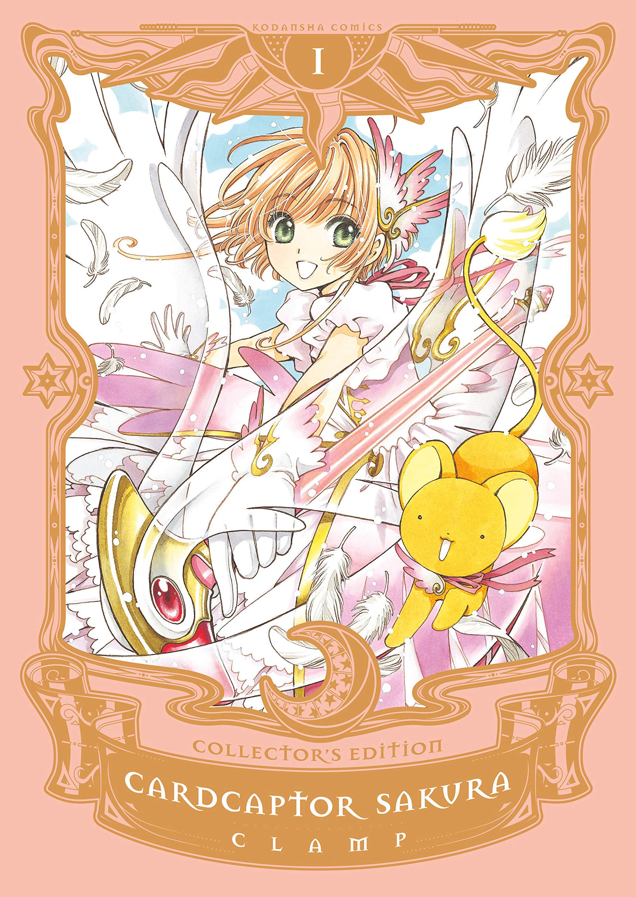
¿Que significa la palabra Manga?(漫画)
Hokusai Katsushika, un representante del ukiyo-e, acuñó el término manga combinando los kanji
correspondientes a
informal (漫 man) y dibujo (画ga). Se traduce, literalmente, como «dibujos
caprichosos» o «garabatos». Al
profesional que escribe o dibuja mangas se le conoce como mangaka. Algunos autores producen asimismo sus mangas
en
vídeo.
Actualmente, la palabra manga se usa en Japón para referirse a "historietas", de forma general. Fuera de Japón,
esta palabra se emplea más concretamente para referirse de estilo japonés de dibujar y contar historias.
Videos mas explicativos de lo que es el manga (comic japones)
Importanca de el manga para la sociedad y cultura japonesa


 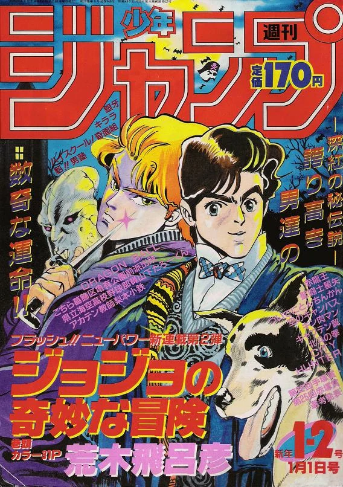
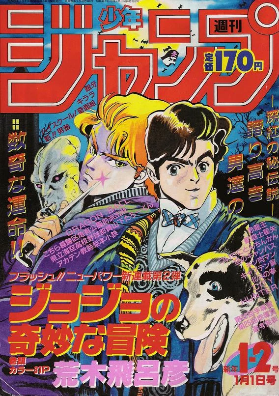

 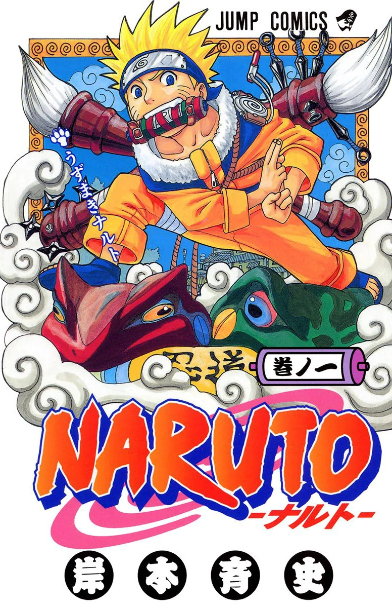
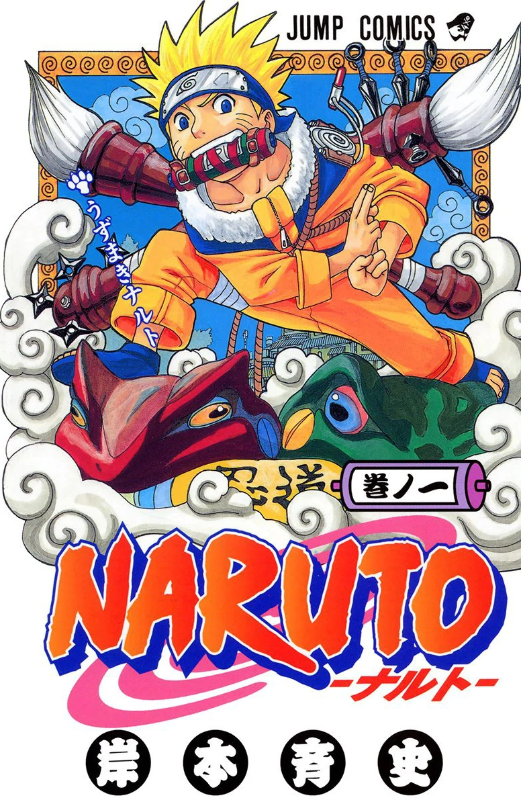


 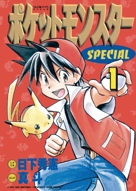
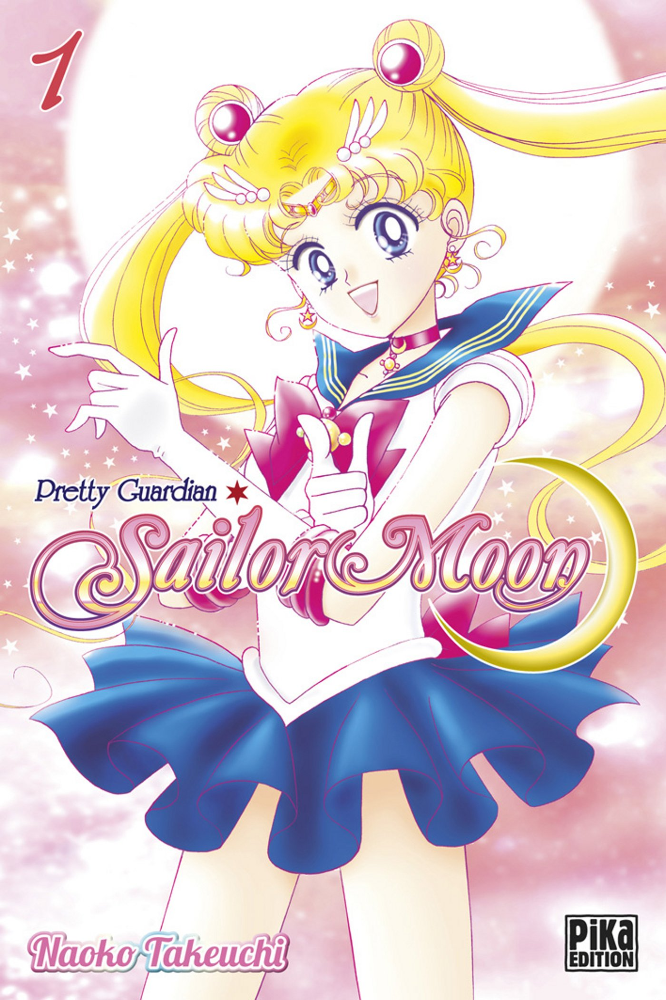
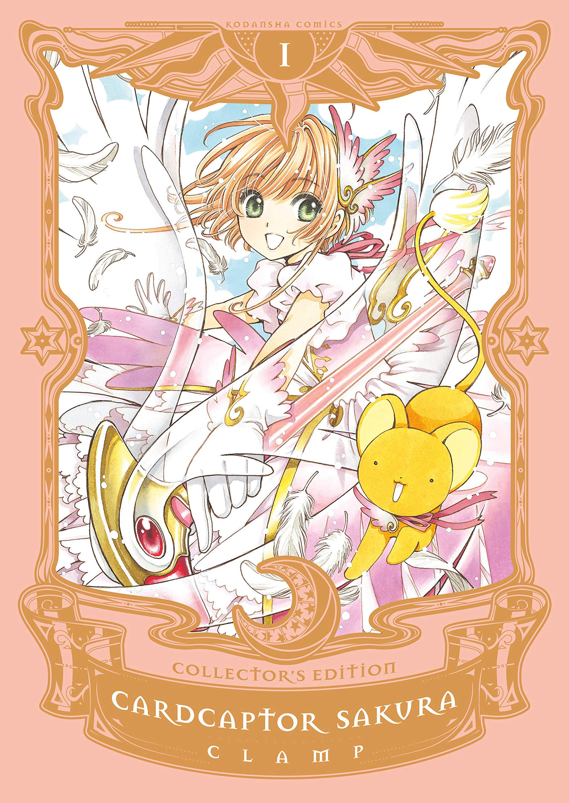
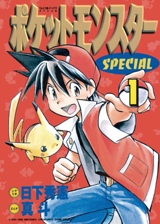
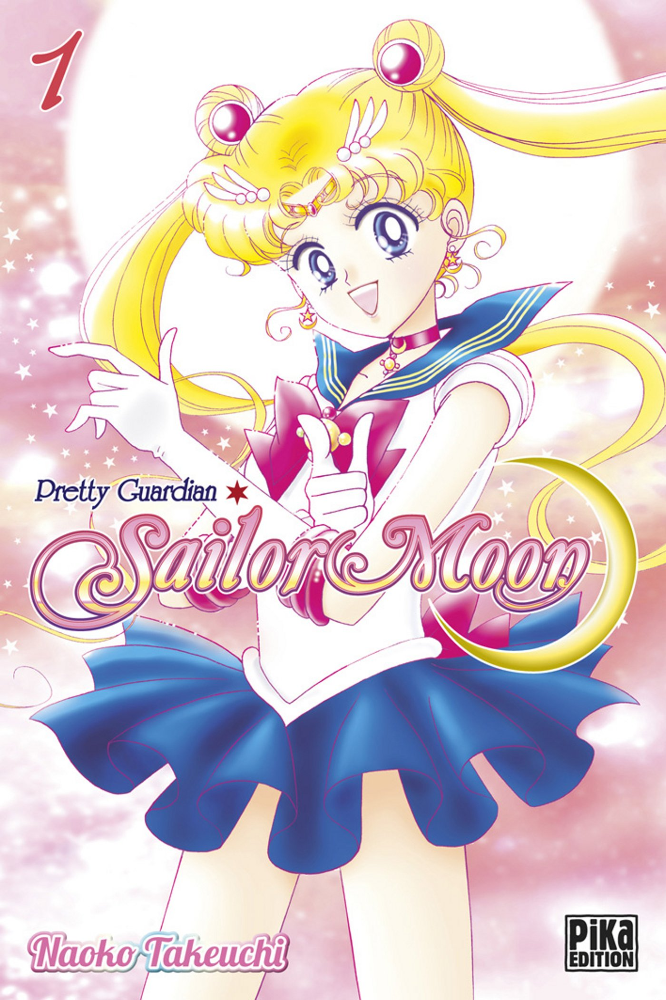
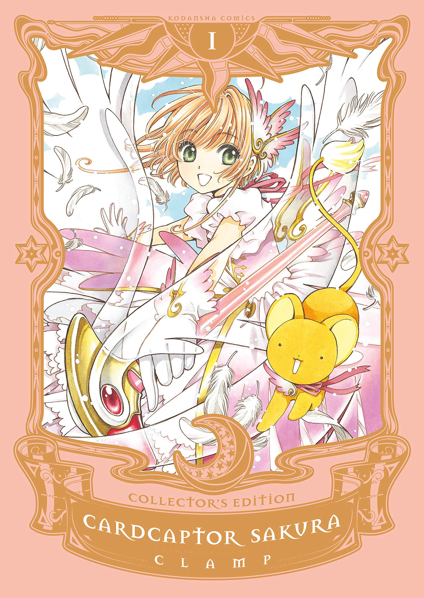

 Actualmente, la palabra manga se usa en Japón para referirse a "historietas", de forma general. Fuera de Japón,
esta palabra se emplea más concretamente para referirse de estilo japonés de dibujar y contar historias.
Actualmente, la palabra manga se usa en Japón para referirse a "historietas", de forma general. Fuera de Japón,
esta palabra se emplea más concretamente para referirse de estilo japonés de dibujar y contar historias.